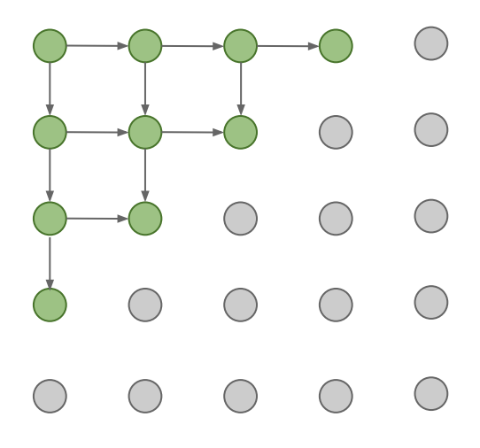

We now give a brief overview of PixelRNN. PixelRNNs belongs to a family of explicit density models called fully visible belief networks (FVBN). We can represent our model with the following equation: \[p(x) = p(x_1, x_2, \dots, x_n),\] where the left hand side \(p(x)\) represents the likelihood of an entire image \(x\), and the right hand side represents the joint likelihood of each pixel in the image. Using the Chain Rule, we can decompose this likelihood into a product of 1-dimensional distributions: \[p(x) = \prod_{i = 1}^n p(x_i \mid x_1, \dots, x_{i - 1}).\] Maximizing the likelihood of training data, we obtain our models PixelRNN.
PixelRNN, first introduced in van der Oord et al. 2016, uses an RNN-like structure, modeling the pixels one-by-one, to maximize the likelihood function given above. One of the more difficult tasks in generative modeling is to create a model that is tractable, and PixelRNN seeks to address that. It does so by tractably modeling a joint distribution of the pixels in the image, casting it as a product of conditional distributions. The factorization turns the joint modeling problem into one that relates to sequences, i.e., we have to predict the next pixel given all the previously generated pixels. Thus, we use Recurrent Neural Networks for this tasks as they learn sequentially. Those same principles apply here; more precisely, we generate image pixels starting from the top left corner, and we model each pixel’s dependency on previous pixels using an RNN (LSTM).

Specifically, the PixelRNN framework is made up of twelve two-dimensional LSTM layers, with convolutions applied to each dimension of the data. There are two types of layers here. One is the Row LSTM layer where the convolution is applied along each row. The second type is the Diagonal BiLSTM layer where the convolution is applied to the diagonals of the image. In addition, the pixel values are modeled as discrete values using a multinomial distribution implemented with a softmax layer. This is in contrast to many previous approaches, which model pixels as continuous values.
The approach of the PixelRNN is as follows. The RNN scans the each
individual pixel, going row-wise, predicting the conditional
distribution over the possible pixel values given what context the
network has. As mentioned before, PixelRNN uses a two-dimensional LSTM
network which begins scanning at the top left of the image and makesits
way to the bottom right. One of the reasons an LSTM is used is that it
can better capture some longer range dependencies between pixels - this
is essential for understanding image composition. The reason a
two-dimensional structure is used is to ensure that the signals
propagate in the left-to-right and top-to-bottom directions well.
The input image to the network is represented by a 1D vector of pixel values \(\{x_1,..., x_{n^2}\}\) for an \(n\)-by-\(n\) sized image, where \(\{x_1,..., x_{n}\}\) represents the pixels from the first row. Our goal is to use these pixel values to find a probability distribution \(p(X)\) for each image \(X\). We define this probability as: \[p(x) = \prod_{i = 1}^{n^2} p(x_i \mid x_1, \dots, x_{i - 1}).\]
This is the product of the conditional distributions across all the pixels in the image - for pixel \(x_i\), we have \(p(x_i \mid x_1, \dots, x_{i - 1})\). In turn, each of these conditional distributions is determined by three values, associated with each of the color channels present in the image (red, green and blue). In other words:
\[p(x_i \mid x_1, \dots, x_{i - 1}) = p(x_{i,R} \mid \textbf{x}_{<i}) \cdot p(x_{i,G} \mid \textbf{x}_{<i}, x_{i,R}) \cdot p(x_{i,B} \mid \textbf{x}_{<i}, x_{i,R}, x_{i,G}).\]
In the next section we will see how these distributions are calculated and used within the Recurrent Neural Network framework proposed in PixelRNN.
As we have seen, there are two distinct components to the “two-dimensional” LSTM, the Row LSTM and the Diagonal BiLSTM. Figure 2 illustrates how each of these two LSTMs operates, when applied to an RGB image.
Row LSTM is a unidirectional layer that processes the image row by row from top to bottom computing features for a whole row at once using a 1D convolution. As we can see in the image above, the Row LSTM captures a triangle-shaped context for a given pixel. An LSTM layer has an input-to-state component and a recurrent state-to-state component that together determine the four gates inside the LSTM core. In the Row LSTM, the input-to-state component is computed for the whole two-dimensional input map with a one-dimensional convolution, row-wise. The output of the convolution is a 4h × n × n tensor, where the first dimension represents the four gate vectors for each position in the input map (h here is the number of output feature maps). Below are the computations for this state-to-state component, using the previous hidden state (\(h_{i-1}\)) and previous cell state (\(c_{i-1}\)). \[[o_i, f_i, i_i, g_i] = \sigma(\textbf{K}^{ss} \circledast h_{i-1} + \textbf{K}^{is} \circledast \textbf{x}_{i})\] \[c_i = f_i \odot c_{i-1} + i_i \odot g_i\] \[h_i = o_i \odot \tanh(c_{i})\]
Here, \(\textbf{x}_i\) is the row of
the input representation and \(\textbf{K}^{ss}\), \(\textbf{K}^{is}\) are the kernel weights
for state-to-state and input-to-state respectively. \(g_i, o_i, f_i\) and \(i_i\) are the content, output, forget and
input gates. \(\sigma\) represents the
activation function (tanh activation for the content gate, and sigmoid
for the rest of the gates).
Diagonal BiLSTM The Diagonal BiLSTM is able to capture the entire image context by scanning along both diagonals of the image, for each direction of the LSTM. We first compute the input-to-state and state-to-state components of the layer. For each of the directions, the input-to-state component is simply a 1×1 convolution \(K^{is}\), generating a \(4h × n × n\) tensor (Here again the dimension represents the four gate vectors for each position in the input map where h is the number of output feature maps). The state-to-state is calculated using the \(K^{ss}\) that has a kernel of size 2 × 1. This step takes the previous hidden and cell states, combines the contribution of the input-to-state component and produces the next hidden and cell states, as explained in the equations for Row LSTM above. We repeat this process for each of the two directions.
When originally presented, the PixelRNN model’s performance was tested on some of the most prominent datasets in the computer vision space - ImageNet and CIFAR-10. The results in some cases were state-of-the-art. On the ImageNet data set, achieved an NLL score of 3.86 and 3.63 on the the 32x32 and 64x64 image sizes respectively. On CiFAR-10, it achievied a NLL score of 3.00, which was state-of-the-art at the time of publication.